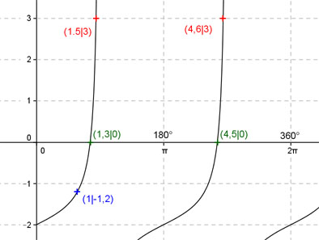

Aufgabe 199 Ergänzen Sie die Wertetabelle für x zwischen 0 und 2π: y = 0,5 tan(x) - 2 x 1 1,5 oder 4,6 y -1,2 3 Periode = π ; tan x ist um 2 Einheiten nach unten verschoben. Berechnung der Nullstellen: 0,5 tan (x) - 2 = 0 |+2 --> 0,5 tan (x) = 2 |:0,5 --> tan x = 4 --> x = arc tan 4 --> x = 1,33 + k * π mit k = 0,1 --> x1 = 1,33 (1,3 gerundet) oder 74,5° x2 = 4,47 (4,5 gerundet) oder 257,8°.  Funktionswert an einer Stelle x ermitteln: 1 * 180° x = 1 oder ---------- = 57,3° π f(1) = 0,5 tan (1) - 2 = = 0,5 tan (57,3°) - 2 = -1,2 gerundet. Berechnung der x-Werte für y = f(x) = 3 f(x) = 3 eingesetzt, existiert zweimal, zwischen 0 und π bzw. 0° und 180° und zwischen π und 2π bzw. 180° und 360° (siehe Graph). 0,5 tan (x) - 2 = 3 |+2 --> 0,5 tan x = 5 |:0,5 --> tan x = 10 --> x = arc tan 10 = 1,47 (1,5 gerundet) --> 1,5 * 180° x1 = 1,5 oder ----------- = 85,9° π x2 = 1,5 + π = 4,6 oder 263,6° gerundet.